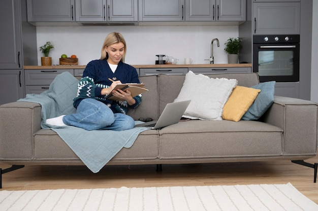

Period features give a home a sense of history, while modern design can make it feel comfortable and suited to everyday life. The most successful interiors allow both to be seen: original details remain part of the room, and contemporary choices bring clarity, function and a personal touch.

Before choosing colours or furniture, take stock of what the room already offers. This might include sash windows, decorative cornices, ceiling roses, fireplaces, panelled doors or original floorboards. Consider which details are in good condition and which contribute most to the character of the space.
Not every old feature needs to become a focal point. A fireplace might anchor a living room, while delicate mouldings can provide a quieter backdrop. Keeping the most distinctive elements visible helps the design feel considered rather than crowded.
A contemporary sofa can sit comfortably beneath ornate cornicing, just as a simple dining table can bring a fresh note to a room with traditional proportions. Contrast works best when it feels deliberate. Repeating a few materials, shapes or colours across old and new elements can help connect them.
For example, modern lighting might echo the curves of an existing doorway, or a restrained colour palette might draw attention to original woodwork. The aim is not to make new pieces look antique, but to create a relationship between the different periods.
Colour can either emphasise period details or soften their presence. A deeper shade on a fireplace wall may make it stand out, while a lighter, unified palette can keep attention on the room’s architecture. Test colours in the space at different times of day, as natural light varies between rooms and seasons.
Natural materials often work well alongside traditional features. Timber, stone, linen and wool can add texture without competing with decorative details. Modern finishes can also be effective, particularly when used selectively rather than across every surface.
Period rooms may have high ceilings, narrow doorways, deep windows or unusual alcoves. Measure carefully before buying furniture, and consider how people will move through the space. Large contemporary pieces can look striking, but they should not block original features or make circulation awkward.
Lighting deserves similar care. Combine practical, modern lighting with fittings that suit the character and scale of the room. Avoid relying on a single central light if the space would benefit from softer illumination in different areas.
Modernising a period home does not require removing every sign of age. Draughts, uneven surfaces or outdated layouts may need attention, but improvements should be planned with the building’s character in mind. Where changes could affect historic fabric, seek appropriate professional advice. If a property is listed, check the relevant requirements before carrying out work.
A thoughtful blend does not have to be perfectly symmetrical or uniform. It should feel comfortable to live in, while allowing the home’s original details and newer additions to complement one another.
This notice explains that information submitted through the contact form should be used to respond to your enquiry and handled in line with the applicable privacy policy. Please review the full policy for details about data use, retention and your choices. Read the Privacy Policy